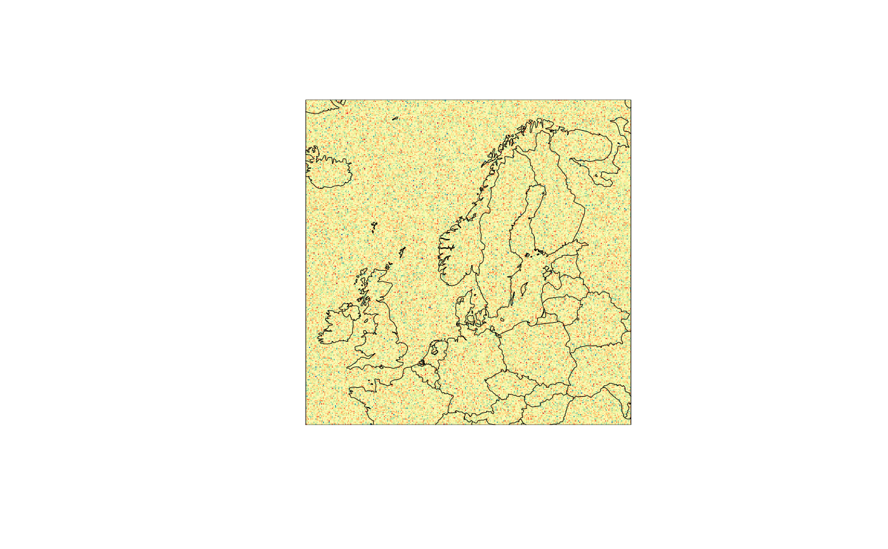

A geofield is a georeferenced 2d-array. The coordinate reference system is
stored as attributes to the array. Used together define_domain,
a geofield can be created from a 2d-array. Additionally, geofield() can be
used to extract a geofield from a geolist. This can be
useful for extracting a geofield in a pipeline.
Usage
geofield(x, ...)
# S3 method for harp_geolist
geofield(x, i = 1, ...)
# S3 method for array
geofield(x, domain, ...)Arguments
- x
A 2d array or
geolist- ...
Used for methods
- i
The element of the
geolistto extract.- domain
A
geodomainwith the same dimensions asx.
Examples
my_domain <- define_domain(10, 60, 300, 10000)
gfld <- geofield(
array(rnorm(300 * 300), c(300, 300)),
domain = my_domain
)
meteogrid::iview(gfld)

geofield(det_grid_df$fcst, 4)
#> :
#> Time:
#> NULL
#> Domain summary:
#> 5 x 5 domain
#> Projection summary:
#> proj= lcc
#> centre = ( 10.74 , 59.91 )
#> Data summary:
#> 0.02995663 0.3776416 0.5347816 0.5381101 0.6854759 0.9864545
# is equivalent to
det_grid_df$fcst[[4]]
#> :
#> Time:
#> NULL
#> Domain summary:
#> 5 x 5 domain
#> Projection summary:
#> proj= lcc
#> centre = ( 10.74 , 59.91 )
#> Data summary:
#> 0.02995663 0.3776416 0.5347816 0.5381101 0.6854759 0.9864545
# but geofield() can be used in a pipeline
det_grid_df$fcst %>%
geofield(4)
#> :
#> Time:
#> NULL
#> Domain summary:
#> 5 x 5 domain
#> Projection summary:
#> proj= lcc
#> centre = ( 10.74 , 59.91 )
#> Data summary:
#> 0.02995663 0.3776416 0.5347816 0.5381101 0.6854759 0.9864545